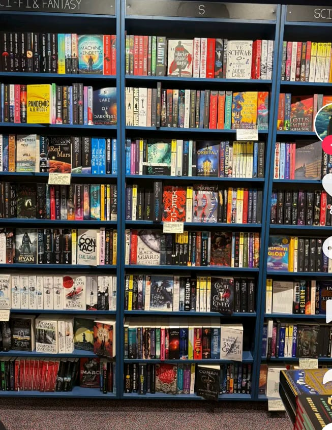
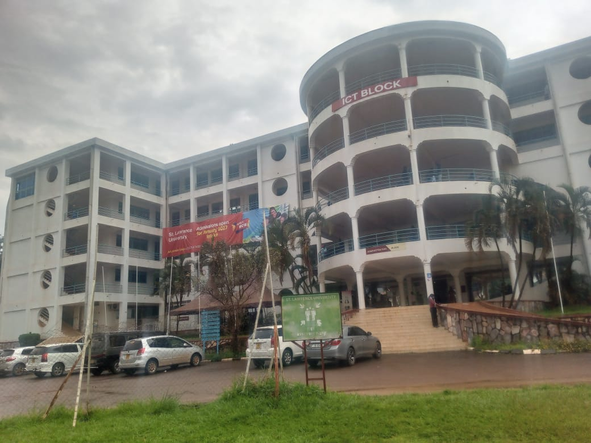
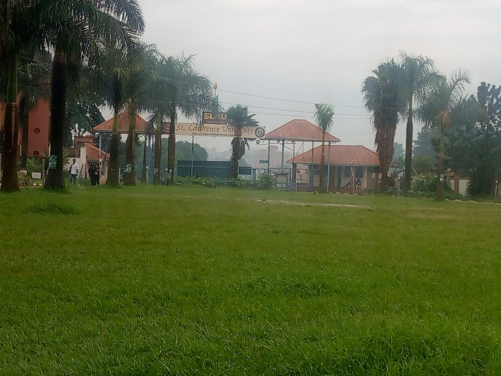
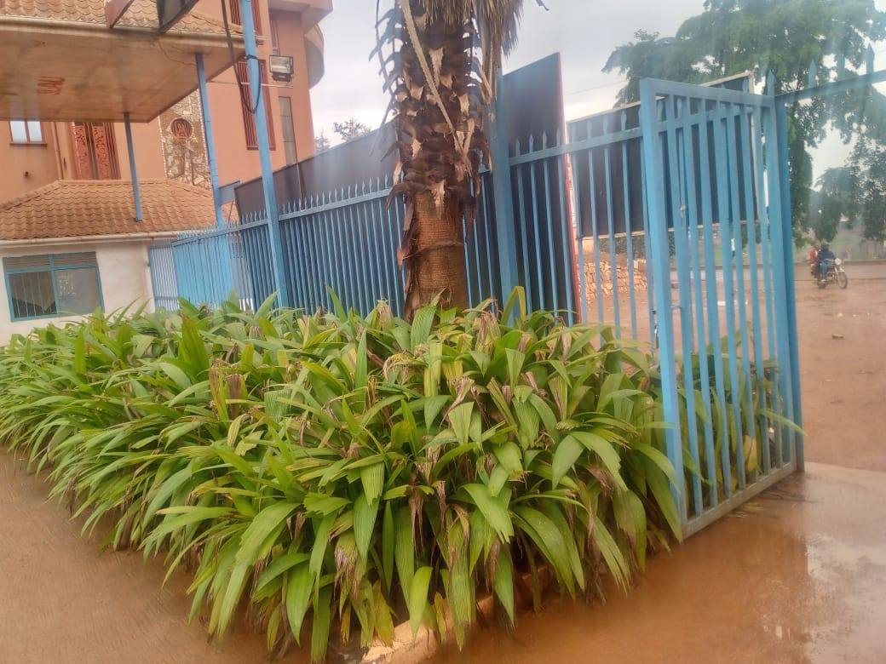
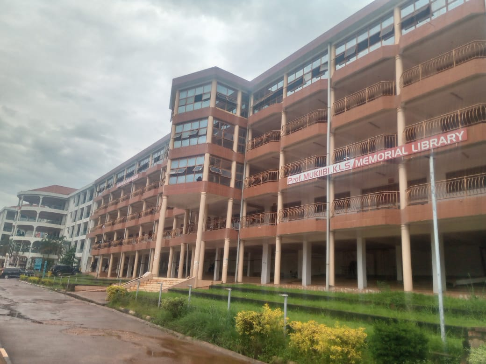

Student Life at St. Lawrence
A vibrant campus community with rich academic, social, and recreational activities
Campus Facilities

Modern Library
A well-stocked library with thousands of books, journals, and digital resources for research and study.

ICT Building
The ICT block supports learning and study in information and communication technology.

Sports Complex
The open green grounds provide space for outdoor recreation, alongside indoor games and student sports activities.

Student Cafeteria
A clean and affordable cafeteria serving nutritious meals and snacks throughout the day.

Campus Entrance
The campus entrance connects visitors to the university's learning and student facilities.

Modern Lecture Halls
Well-ventilated and equipped lecture halls providing a comfortable learning environment.

Green Campus
Beautifully maintained green spaces and walking paths for relaxation and outdoor study.

Wi-Fi Campus
Campus-wide wireless internet connectivity to support learning and research activities.
Clubs & Societies
Music & Dance Club
Express your creativity through music, dance, and cultural performances. Regular shows and inter-university competitions.
Debate & Public Speaking
Sharpen your critical thinking and communication skills through debates, moot courts, and public speaking events.
Entrepreneurship Club
Develop your business ideas, network with industry leaders, and participate in startup competitions and pitch events.
Environmental Club
Engage in community service, tree planting, and environmental awareness campaigns to make a positive impact.
Sports Associations
Join football, basketball, netball, volleyball, athletics, and other sports teams representing the university.
Literary & Writing Club
For the creative minds — write, read, and share poetry, short stories, and articles at regular meetups.
Student Support Services
Counseling Services
Professional counseling and psychological support to help students navigate personal and academic challenges.
Career Services
Career guidance, CV writing workshops, interview preparation, and job placement assistance for graduating students.
Student Government
The Students' Representative Council (SRC) advocates for student welfare and organizes campus events and activities.
Academic Tutoring
Peer tutoring and academic support programs to help students excel in their coursework and examinations.
Accommodation
On-Campus Hostels
Secure and affordable on-campus hostel accommodation available for both male and female students. Rooms are furnished with basic amenities and include study areas, common rooms, and 24/7 security.
Off-Campus Housing
For students preferring off-campus living, our housing office provides verified listings of nearby apartments and rooms within safe and convenient distance from the campus.
Local Support
Our student affairs office assists new students in finding suitable accommodation, understanding rental agreements, and settling into campus life smoothly.
Events & Activities
Orientation Week
Each semester begins with an exciting orientation week for new students, featuring campus tours, club fairs, and social events.
Inter-Faculty Sports
Annual sports competitions between faculties fostering teamwork, healthy competition, and school spirit.
Cultural Festival
A celebration of Uganda's diverse cultures through music, dance, food, and traditional attire showcases.
Graduation Ceremony
A prestigious annual ceremony celebrating the achievements of our graduating class with family and distinguished guests.